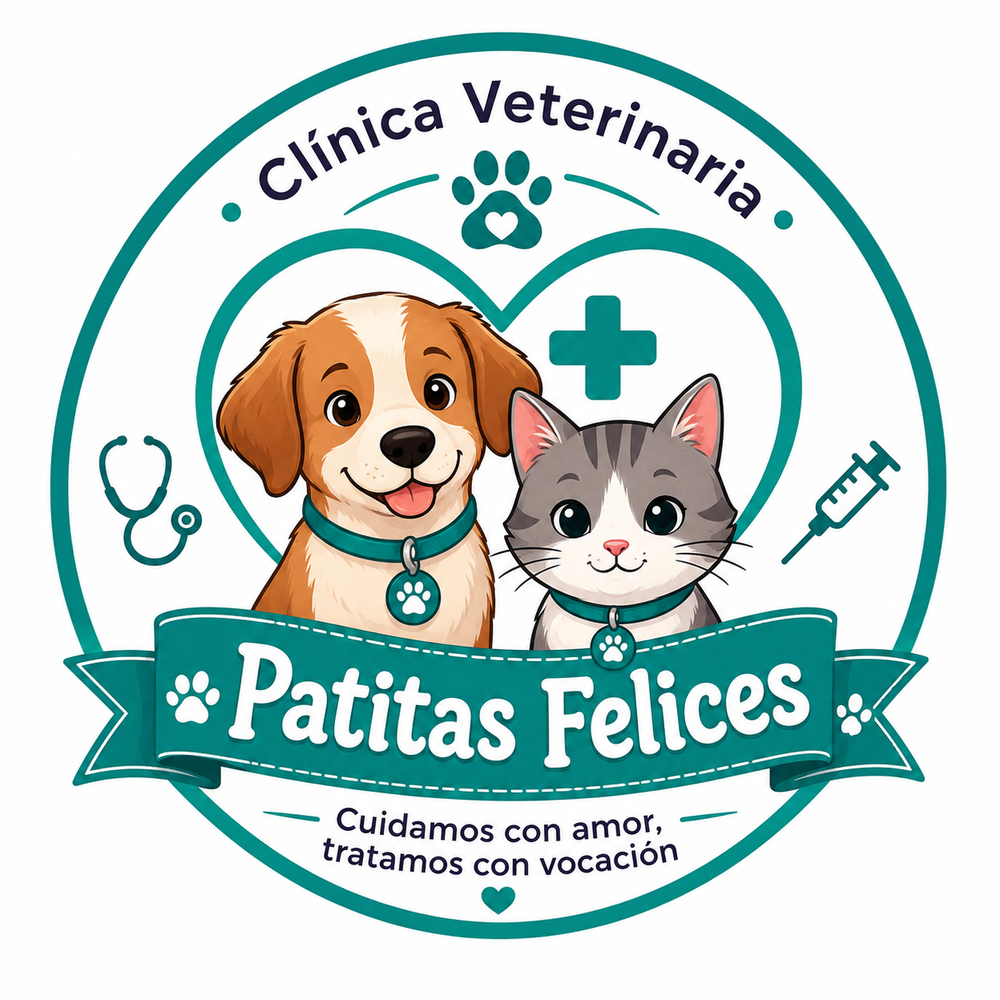

Sistema de Gestión Veterinaria
Este sistema fue desarrollado como proyecto académico para la administración de una clínica veterinaria. Permite gestionar clientes, mascotas, consultas médicas, citas, ventas, vacunas, cirugías y tratamientos.
Nombre: Itzayana De León
Materia: Producto Integrador de Aprendizaje
Sistema: Clínica Veterinaria Patitas Felices